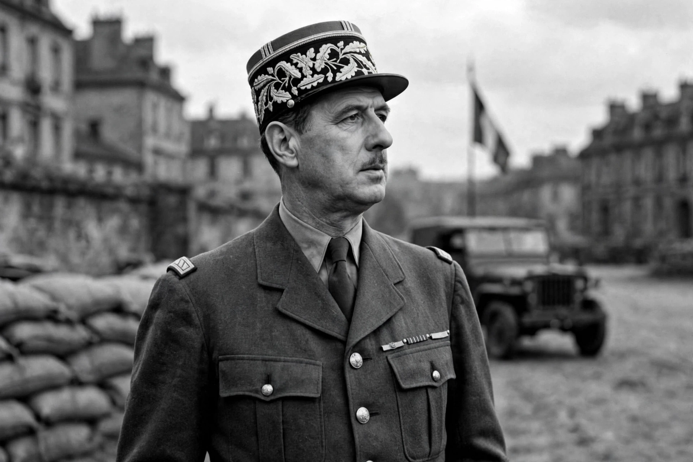

| Charles de Gaulle | |
|---|---|
| Born | 22 November 1890, Lille, France |
| Died | 9 November 1970 (aged 79), Colombey-les-Deux-Églises, France |
| Offices | Leader of Free France (1940–1944); Prime Minister (1958–1959); President of France (1959–1969) |
| Political movement | Gaullism |
Charles André Joseph Marie de Gaulle (22 November 1890 – 9 November 1970) was a French army officer and statesman who led the Free French Forces against Nazi Germany in the Second World War and chaired the Provisional Government of the French Republic from 1944 to 1946. In 1958, amid the Algerian War, he came out of retirement, founded the Fifth Republic with a strong presidency, and served as President of France from 1959 to 1969.
De Gaulle graduated from the military academy of Saint-Cyr and served with distinction in the First World War, being wounded several times and captured at Verdun in 1916. Between the wars he advocated armoured warfare and professional mechanised forces in works such as The Army of the Future (1934), ideas largely ignored in France but noted in Germany. In May–June 1940, promoted to brigadier general, he commanded an armoured division against the German invasion and briefly served as under-secretary for war before rejecting the armistice.
From London on 18 June 1940 de Gaulle broadcast his famous Appeal of 18 June, calling on the French to continue the fight — the founding act of Free France. Recognised by Churchill but often at odds with Roosevelt, he built Free French forces from colonies and resistance networks, entered Paris in August 1944, and headed the provisional government that restored the Republic, enfranchised women and founded much of France's post-war welfare and industrial state. He resigned in January 1946, frustrated with the restored parliamentary regime of the Fourth Republic.
The Algerian crisis of May 1958 brought de Gaulle back as prime minister with emergency powers. The constitution of the Fifth Republic, drafted under Michel Debré, created a powerful executive presidency. De Gaulle became president in January 1959. He granted independence to France's sub-Saharan colonies and, after a bitter war and the Évian Accords (1962), to Algeria. He developed an independent nuclear deterrent (the force de frappe), withdrew France from NATO's integrated command in 1966, vetoed British entry into the European Economic Community twice, and pursued reconciliation with West Germany, sealed by the Élysée Treaty of 1963.
Student protests and a general strike in May 1968 nearly toppled him; he dissolved the Assembly and won a crushing electoral victory, but his authority was diminished. In April 1969, after losing a referendum on Senate and regional reform, he resigned at once, keeping his promise to leave if defeated. He retired to Colombey-les-Deux-Églises to write his memoirs and died there on 9 November 1970.
Gaullism — national independence, a strong state and executive, social reform tempered by order — remains a central tradition in French politics. De Gaulle is regularly ranked among the greatest French leaders; Paris's largest airport and the aircraft carrier Charles de Gaulle bear his name, as does the Cross of Lorraine emblem he adopted in 1940.